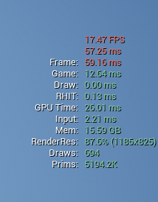
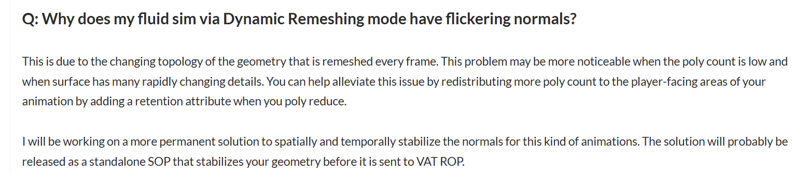
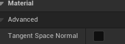
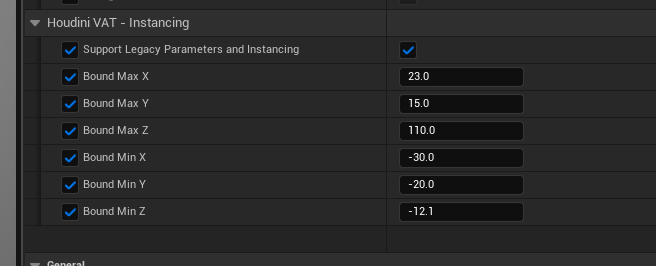

第 2 周
VAT 与 USD Instancing 测试
1 月 14 日
已完成：
待办事项：
-
上周我测试了两种不同的流程（USD 和 VAT），把 Yichen 的蕨类模拟从 Houdini 转到 Unreal
-
在 Houdini 和 Unreal 中尝试 VAT Instancing
-
在 Houdini 中尝试另一种 Instancer 方法，并测试它在 Unreal 中的效能
-
在 Unreal 中尝试带动画的 USD Instancing
Houdini 中的 USD INSTANCING：
USD 有两种方式：instanceable primitives 和 point instancing。
Point instancing：尝试不同的 point instancing 方法，我用 15 株蕨类来测试档案大小。


Point Instancer：蕨类在 Unreal 中没有动画。
Instanceable Reference：成功
Reference：成功
Instanceable Inherit：成功
Inherit：成功
Instanceable Specialize：成功
Specialize：成功

结果：所有方法的效能相近，档案大小也相同。
Unreal 中的 USD INSTANCING：
和 Danci 讨论并进一步研究后，我们发现 Unreal 不支援带动画的 USD instancing。
VAT（除错）
我要用公式测试 VAT 是否可行：(影格数 × 点数) / 贴图尺寸，并确保结果不超过 9000。我减少了蕨类的毛发面片，模型现在是 25,861 个多边形。依公式计算结果为 757.6，所以算图很快，也成功输出了。我认为在低面数模型上使用 opacity 贴图会是不错的做法。

问题：
如上周提到的，我把整株蕨类汇入 Unreal 时，画面出现破绽、叶子会闪烁。为了找出问题，我决定把叶子单独拆出来，先测试单片叶子，找出可能造成问题的部分。
我尝试了不同的蕨类叶子细分等级，观察它们对 Unreal 中效能与画质的影响。


首先：
后来我找到即使提高细分仍有拉伸破绽的原因：枝干和叶子互相穿插。拿掉枝干后，效果好多了。
不能穿插的原因：VAT 只是从贴图重播烘焙好的逐顶点位置（没有碰撞、自碰撞或表面先后顺序的资讯），所以当部件重叠时，模型无法判断哪一面应该在前面，导致穿模、闪烁或撕裂。
接著我测试了蕨类，看起来还是有破绽。

解决方法：尽量避免生长中的植物自我穿插，并确保面数足以应付快速变形。

关闭 Tangent Space Normal

勾选这些选项
Unreal 中的 VAT INSTANCING（NIAGARA）
最重要的是从 Houdini 输出时要勾选这个选项。

把这三个资料夹汇入 Unreal，然后在 material instance 中从资料夹复制资料。接著建立一个 Niagara 系统，在 Render 下的 Mesh Renderer 指定模型与材质。


-
尝试 USD variants 和 PDG